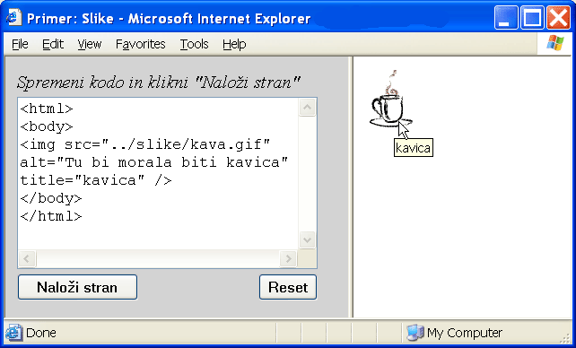

Glavna značilnost spletnih strani je njihova povezanost z drugimi spletnimi stranmi. Če v spletnem dokumentu kliknemo na spletno povezavo (angl. hyperlink), nas brskalnik takoj prestavi na drugo spletno stran, na katero ta povezava kaže. Primeri dokumentov, ki smo jih srečali doslej, tega ne znajo, zato si skoraj ne zaslužijo, da jih kličemo spletni dokumenti. Čas je, da se vprašamo, kako našim stranem dodati povezavo, da bodo resnično zaživele kot spletne strani. Nič lažjega - uporabimo element a (angl. anchor = sidro). A žal ta element kot tak nima nobenega učinka, nujno mu moramo dodati vsaj eno lastnost. Odložimo dramatičen trenutek povezave s svetom še za kratek čas in si oglejmo, kaj so lastnosti elementov in kako jih uporabljamo.
Doslej smo uporabljali elemente takšne, kakršni so. V določenih primerih nas elementi v svoji osnovni obliki popolnoma zadovoljijo, pogosto pa si želimo, da se obnašajo drugače. V ta namen imajo elementi svoje lastnosti (angl. attribute), ki jim lahko spreminjamo vrednosti, če s privzetimi (angl. default) nismo zadovoljni. Lastnosti zapisujemo v obliki
ime_lastnosti="vrednost"
|
Za ime lastnosti lahko uporabimo kakršnokoli veljavno ime lastnosti za določen element. Vrednost elementa pišemo vedno v navednicah. Navadno uporabimo dvojne ("), dovoljene pa so tudi enojne navednice ('). Lastnosti, ki jih bomo obravnavali v tem učbeniku, so zbrane v tabeli elementov.
Lastnosti zapisujemo v začetno značko elementa, takoj za imenom elementa. Kadar želimo nastaviti vrednosti več lastnosti hkrati, jih s pripadajočimi vrednostmi naštejemo eno za drugo, ločene s presledki. Spošna oblika zapisa oziroma sintaksa (angl. syntax) kakršnegakoli elementa z vsebino izgleda torej takole:
<ime_elementa lastnost1="vrednost1" lastnost2="vrednost2" ... lastnostn="vrednostn"> vsebina elementa </ime_elementa> |
Prazne elemente zapisujemo v taki obliki:
<ime_elementa lastnost1="vrednost1" lastnost2="vrednost2" ... lastnostn="vrednostn" /> |
Za primer si oglejmo, kako lahko z lastnostmi bgcolor (angl. background colour = barva ozadja) in text v elementu body spreminjamo barvo ozadja in besedila. Drugi primer pa nam kaže, kako lahko dosežemo različne uravnave besedila v odstavku.
Tako kot imena elementov, moramo tudi imena lastnosti pisati z malimi črkami. Če brskalnik imena lastnosti ne razpozna, bo to lastnost preprosto spregledal. Enako bo spregledal element, če njegovega imena ne napišemo pravilno. Prikazal bo le (neoblikovano) vsebino elementa.
Verjetno ne bo odveč, če pripomnim, da pri zapisovanju lastnosti presledki ob enačajih ne igrajo nobene posebne vloge. Pišemo lahko:
<body bgcolor = "yellow" text = "white">
ali tudi:
<body bgcolor="yellow" text="white">
Lastnosti lahko zapisujemo tudi vsako v svojo vrstico:
<body bgcolor="yellow"
text="white">
Paziti moramo le, da presledkov ne vstavljamo med dvojne navednice, v katerih se nahajajo vrednosti. Vrednost "yellow" tako ni isto kot " yellow". Presledka tudi ne smemo vstaviti na začetek začetne značke med znak < in ime elementa. Večina brskalnikov na primer zapisa < em> ne bo razpoznala kot značko elementa em, ker pred njenim imenom stoji presledek.
Če želimo, da bo element a deloval kot povezava na neko drugo spletno stran, mu moramo nastaviti lastnost href (angl. hyperreference = hiper povezava) na vrednost, ki je enaka spletnemu naslovu strani, na katero želimo usmeriti povezavo. To je lahko poln spletni naslov (na primer http://www.w3schools.com/), lahko pa je samo ime datoteke z relativno potjo, če se datoteka nahaja na istem spletnem strežniku. Vsebina elementa se v brskalniku navadno pokaže kot podčrtano besedilo in če se z miškinim kurzorjem zapeljemo čezenj, se podoba kurzorja spremeni v roko z iztegnjenim kazalcem.
Naš naslednji primer kaže povezavo na dokument na istem računalniku in povezavo na spletno stran na drugem strežniku.
Včasih naletimo na spletne strani, ki so zelo dolge in je na njih težko hitro najti določene dele besedila. V takih primerih so zelo ročne povezave, katerih cilj je kar isti dokument. Cilj takšne povezave označimo z elementom a, tako da mu nastavimo lastnost id (angl. identification = identifikacija). Ta lastnost je določena šele z novejšimi standardi jezika in je veliko brskalnikov še ne podpira. Zato je priporočljivo vsakokrat, kadar nastavljamo lastnost id kateregakoli elementa, hkrati na isto vrednost nastaviti tudi lastnost name, ki je predhodnik lastnosti id. Cilj povezave bi lahko označili na primer z
<a name="semkaj" id="semkaj"></a>
Na takšno mesto se potem povežemo preko lastnosti href, ki ji priredimo vrednost, ki je enaka imenu cilja, spredaj pa moramo dodati znak #. Na ta znak nikakor ne smemo pozabiti, sicer stvar ne bo delovala. Takole bi izgledala povezava:
<a href="#semkaj"></a>
Seveda se lahko na cilj z imenom "semkaj" povežemo tudi iz drugega dokumenta. Takrat lastnosti href dodamo še ime datoteke ali poln spletni naslov, na primer:
<a href="tjakaj.html#semkaj"></a>
Poigrajmo se še malo s primerom.
Povezavo je možno usmeriti tudi na pošiljanje pošte. Tudi za tovrstno povezavo se uporablja lastnost href, ki jo nastavimo takole:
<a href="mailto:nekmozakar@tamnekje.si">Pošlji pismo</a>
Pred poštni naslov postavimo besedo mailto in dvopičje. Za poštnim naslovom lahko zapišemo še zadevo (angl. subject) sporočila. Vmes mora biti vprašaj:
<a href="mailto:nekmozakar@tamnekje.si?subject=neki">Pošlji pismo</a>
S klikom na takšno povezavo se odpre poštni program, ki ima že izpoljnjeni polji z naslovnikom in zadevo. Če imate pravilno nameščen program za pošiljanje pošte, lahko poizkusite tale primer.
Povezovanje ni omejeno le na povezovanje z drugimi spletnimi stranmi. V spletne dokumente lahko na različne načine vključimo datoteke najrazličnejših vrst. Znotraj okna brskalnika lahko celo zaganjamo druge programe, ki nam pomagajo pri prikazovanju raznovrstnih vsebin, tudi multimedijskih. Vse to presega okvire našega učbenika. Na tem mestu si bomo ogledali le, kako v spletni dokument vključiti mirujočo sliko.
Dandanašnji brskalniki v splošnem podpirajo dva različna slikovna zapisa: GIF (Graphics Interchange Format) in JPEG (Joint Photographic Experts Group). Zadnje čase prodira na splet še tretji zapis slike, PNG (Portable Network Graphics), ki ga moderni brskalniki že kar dobro podpirajo, uporabniki z malo starejšimi brskalniki pa slik v tem zapisu ne bodo videli. Opisovanje omenjenih slikovnih zapisov presega namene tega učbenika, omenim naj le, da se zapis JPEG uporablja predvsem za fotografije, zapis GIF pa za risbe. Poleg tega zapis GIF podpira tudi animacije in prosojnost. Skozi del slike, ki je prosojen, se bo prosevalo ozadje, na katerem se slika nahaja.
Sliko vstavimo v dokument s praznim elementom img (angl. image = slika). Obvezni lastnosti tega elementa sta src (angl. source = izvor) in alt (angl. alternative = druga možnost). Z lastnostjo src povemo, kje se nahaja slika, ki jo želimo prikazati. Pri tem lahko navedemo le ime datoteke z relativno potjo do nje, če je slika na istem strežniku kot dokument, ki sliko prikazuje, lahko pa podamo poln spletni naslov, če se slika nahaja drugje v spletu. Lastnosti alt priredimo besedilo, ki naj se prikaže, če slike ni mogoče prikazati. To besedilo nekateri brskalniki prikažejo tudi kot okence z namigom (angl. tooltip), če se z miško zapeljemo nad sliko. Če dodamo sliki lastnost title, potem slednja poskrbi za vsebino okenca z namigom, kot to vidimo na sliki 3.
|  |
| Slika 3: Besedilo lastnosti title elementa img se pokaže v okencu z namigom, če se z miško zapeljemo nad sliko. |
Poigrajmo se še malo s primerom.
Omenim naj še, da lastnosti title starejši brskalniki ne podpirajo. Zaradi kompatibilnosti je zato priporočljivo obema lastnostima alt in title prirediti isto besedilo.
Na določenih spletnih straneh (katalogi, galerije in podobno) pogosto zasledimo ogromno slikovnega materiala visoke ločljivosti. Uporabniki, ki nimajo ravno najhitrejšega dostopa do Interneta, si takšnih strani ne bodo mogli ogledati, ali pa bodo imeli pri tem vsaj velike težave. Tudi sicer je stran veliko prijaznejša in preglednejša, če takšnega slikovnega materiala ne prikazuje neposredno, ampak najprej prikaže tako imenovane nohtke (angl. thumbnail), ki so pomanjšane slike. Šele ko gledalec klikne na določen nohtek, se mu pokaže slika v polni ločljivosti. Za tehnično izvedbo takšne spletne galerije imamo že dovolj znanja. Vse, kar moramo storiti, je to, da v element a namesto besedila vstavimo element img in slika, ki jo predstavlja ta element bo postala povezava na neko drugo spletno stran, kjer se nahaja ista slika v polni ločljivosti:
<a href="slika1.html"><img src="slika1_thumb.jpg" alt="Zimsko jutro" /></a>
Brskalniki navadno okrog slike, ki predstavlja spletno povezavo, napravijo okvir, s čimer nakažejo, da je sliko možno klikniti. Tak okvir pogosto moti estetsko podobo spletne strani, zato ga običajno izklopimo. To lahko storimo s pomočjo lastnosti border:
<a href="slika1.html"><img src="slika1_thumb.jpg" alt="Zimsko jutro" border="0" /></a>
Za konec si oglejmo še primer preproste spletne galerije fotografij in kako uravnati sliko v besedilu.
Elementi imajo lastnosti, ki jim nastavljamo vrednosti in s tem spreminjamo učinek, ki ga ima element na svojo vsebino. Vrednosti, ki jih prirejamo lastnostim, morajo biti vedno v navednicah.
Z elementom a lahko z nastavljanjem lastnosti href ustvarimo povezavo na poljubno mesto poljubne spletne strani. Vsebina takšnega elementa se ponavadi prikaže kot podčrtano besedilo. Ustvarimo lahko tudi povezavo na pošiljanje pošte.
Z elementom img, ki je vrstični element, v dokument vključimo sliko. Lastnosti src in alt moramo temu elementu obvezno nastaviti. Če element img vstavimo v element a, lahko ustvarimo spletno povezavo prek slike.